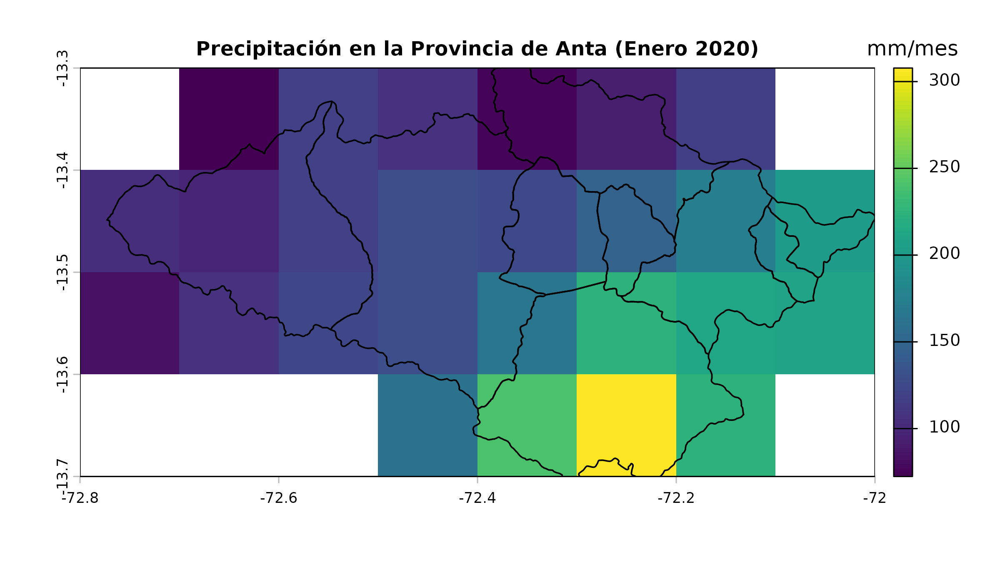
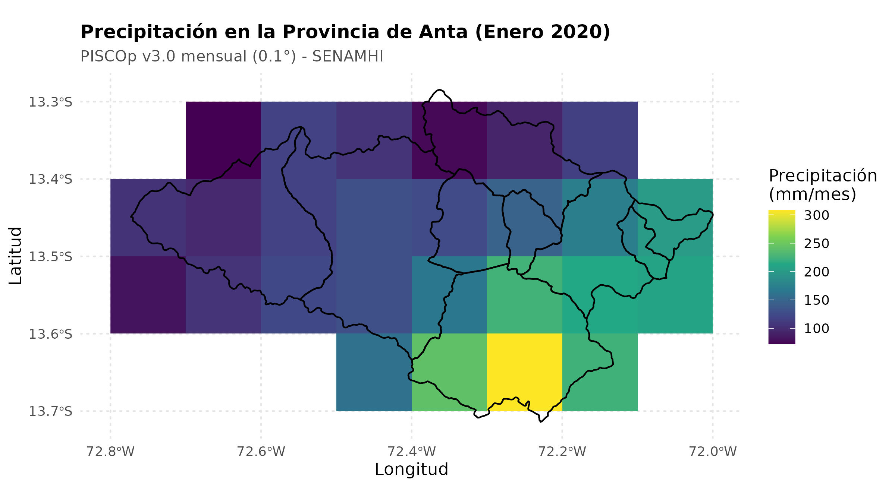

Precipitación PISCO para la provincia de Anta, Cusco
Source:vignettes/anta-cusco-precipitation.Rmd
anta-cusco-precipitation.RmdEste artículo muestra cómo obtener los límites oficiales de la
provincia de Anta (departamento de
Cusco), conformada por sus 9 distritos (Anta,
Ancahuasi, Cachimayo, Chinchaypujio, Huarocondo, Limatambo, Mollepata,
Pucyura y Zurite), y cómo procesar la precipitación mensual grillada de
PISCOp v3.0 para el periodo 2020–2024 utilizando geoperu y
rpisco.
Nota: Los bloques de código que descargan o procesan archivos NetCDF de gran tamaño están configurados con
eval = FALSEpara permitir la compilación rápida y fuera de línea de la viñeta conforme a las directivas de CRAN.
1. Obtención de los Límites de la Provincia de Anta
A través de geoperu, se descarga la cartografía oficial
del INEI para la provincia de Anta:
# Descargar límites de la provincia de Anta (incluye sus 9 distritos)
anta_provincia <- geoperu::get_geo_peru(
geography = "ANTA",
level = "prov",
simplified = FALSE,
showProgress = FALSE
)
# Verificar distritos contenidos
print(anta_provincia[, c("departamento", "provincia", "distrito")])
#> Simple feature collection with 9 features and 3 fields
#> Geometry type: MULTIPOLYGON
#> Dimension: XY
#> Bounding box: xmin: -72.77286 ymin: -13.71406 xmax: -72.00001 ymax: -13.28477
#> Geodetic CRS: WGS 84
#> departamento provincia distrito geom
#> 1 CUSCO ANTA CHINCHAYPUJIO MULTIPOLYGON (((-72.25802 -...
#> 2 CUSCO ANTA ANTA MULTIPOLYGON (((-72.11767 -...
#> 3 CUSCO ANTA PUCYURA MULTIPOLYGON (((-72.06076 -...
#> 4 CUSCO ANTA CACHIMAYO MULTIPOLYGON (((-72.00248 -...
#> 5 CUSCO ANTA MOLLEPATA MULTIPOLYGON (((-72.54716 -...
#> 6 CUSCO ANTA LIMATAMBO MULTIPOLYGON (((-72.54668 -...
#> 7 CUSCO ANTA HUAROCONDO MULTIPOLYGON (((-72.23262 -...
#> 8 CUSCO ANTA ZURITE MULTIPOLYGON (((-72.20297 -...
#> 9 CUSCO ANTA ANCAHUASI MULTIPOLYGON (((-72.27944 -...Si se desea obtener un único polígono envolvente de toda la provincia consolidada:
# Unir los distritos en un único polígono provincial
anta_limite_total <- sf::st_union(anta_provincia)2. Descarga Explícita del Producto PISCOp Mensual
rpisco requiere autorización explícita para la descarga
de datos mediante pisco_download(). El archivo NetCDF (~56
MB) se almacena en la caché de usuario (tools::R_user_dir),
evitando descargas redundantes en sesiones futuras:
# Descargar PISCOp v3.0 mensual (1981-2025)
pisco_download("monthly")
#> ✔ Refreshed metadata for 9 PISCO file(s).
#>
#> ── Downloading PISCO dataset: monthly (PISCOp_m) ──
#>
#> ℹ Variable: "precipitation" | File: "PISCOp_m.nc" | Size: ~53.98 MB
#> ℹ Period: "1981-01 to 2025-12" | Resolution: "0.10 deg (~10 km)"
#> ℹ Source: Figshare repository
#> ✔ MD5 checksum verified successfully: "fbf4f19b5d537183a75d08615c404010"
#> ✔ Dataset saved successfully to: /home/runner/.cache/R/rpisco/PISCOp_m.nc
#> [1] "/home/runner/.cache/R/rpisco/PISCOp_m.nc"
# Verificar el estado de la caché local
pisco_cache_status()
#> # A tibble: 16 × 6
#> dataset filename cached expected_mb cached_mb path
#> <chr> <chr> <lgl> <dbl> <dbl> <chr>
#> 1 monthly PISCOp_m.nc TRUE 54.0 54.0 /hom…
#> 2 daily PISCOp_d.nc FALSE 1456. 0 NA
#> 3 climatology PISCOp_clim2.nc FALSE 1.74 0 NA
#> 4 tmax_daily tmax_daily_1981_2020_0… FALSE 603. 0 NA
#> 5 tmin_daily tmin_daily_1981_2020_0… FALSE 620. 0 NA
#> 6 tmax_clim tmax_mean_1981-2010_01… FALSE 0.52 0 NA
#> 7 tmin_clim tmin_mean_1981-2010_01… FALSE 0.53 0 NA
#> 8 eto_clim eo_mean_1981-2010.nc FALSE 64.0 0 NA
#> 9 erosivity_r PISCOa_re.nc FALSE 1.75 0 NA
#> 10 erosivity_density PISCOa_ed.nc FALSE 1.75 0 NA
#> 11 streamflow_monthly PISCO_GR2M_v2.0.nc FALSE 24.6 0 NA
#> 12 streamflow_daily PISCO_ARNOVIC_v1.1.nc FALSE 747. 0 NA
#> 13 catchments_gr2m cat_pisco_gr2m_v2.0.gp… FALSE 100. 0 NA
#> 14 rivers_gr2m riv_pisco_gr2m_v2.0.gp… FALSE 15.2 0 NA
#> 15 catchments_arnovic cat_pisco_arnovic_v1.1… FALSE 100. 0 NA
#> 16 rivers_arnovic riv_pisco_arnovic_v1.1… FALSE 15.2 0 NA3. Extracción de Series Temporales de Precipitación
Se cargan las capas correspondientes al periodo 2020–2024 y se
calculan las medias zonales mensuales para cada distrito de la provincia
de Anta utilizando pisco_extract():
# Leer solo los años 2020 a 2024 desde la caché local
pisco_mensual <- pisco_read(
dataset = "monthly",
dates = 2020:2024
)
# Extraer el promedio espacial mensual (mm/mes) por distrito
precipitacion_distrital <- pisco_extract(
x = pisco_mensual,
polygons = anta_provincia,
id_col = "distrito",
fun = mean
)
head(precipitacion_distrital)
#> # A tibble: 6 × 3
#> id date precipitation
#> <chr> <date> <dbl>
#> 1 CHINCHAYPUJIO 2020-01-01 235.
#> 2 CHINCHAYPUJIO 2020-02-01 217.
#> 3 CHINCHAYPUJIO 2020-03-01 155.
#> 4 CHINCHAYPUJIO 2020-04-01 22.6
#> 5 CHINCHAYPUJIO 2020-05-01 16.3
#> 6 CHINCHAYPUJIO 2020-06-01 4.62Para obtener una única serie promedio consolidada para toda la provincia:
# Extraer el promedio espacial para toda la provincia consolidada
precipitacion_provincial <- pisco_extract(
x = pisco_mensual,
polygons = anta_provincia,
id_col = "provincia",
fun = mean
)
head(precipitacion_provincial)
#> # A tibble: 6 × 3
#> id date precipitation
#> <chr> <date> <dbl>
#> 1 ANTA 2020-01-01 148.
#> 2 ANTA 2020-02-01 164.
#> 3 ANTA 2020-03-01 130.
#> 4 ANTA 2020-04-01 28.1
#> 5 ANTA 2020-05-01 16.3
#> 6 ANTA 2020-06-01 11.24. Recorte y Enmascaramiento Espacial (pisco_clip)
Para aislar y visualizar la cuadrícula espacial de precipitación
sobre el ámbito territorial de la provincia de Anta, se utiliza la
función optimizada pisco_clip():
# Recortar y enmascarar la grilla raster al límite de la provincia
pisco_anta <- pisco_clip(pisco_mensual, mask = anta_provincia)Podemos visualizar la distribución espacial de la precipitación
utilizando los métodos gráficos base de terra, ajustando
los márgenes y relación de aspecto para la geometría de la
provincia:
# Visualizar la precipitación del primer mes (enero de 2020) con terra
plot(
pisco_anta[[1]],
main = "Precipitación en la Provincia de Anta (Enero 2020)",
plg = list(title = "mm/mes"),
mar = c(3.2, 3.2, 2.5, 5),
cex.main = 0.95
)
plot(sf::st_geometry(anta_provincia), add = TRUE, border = "black", lwd = 1.2)
O generar una visualización cartográfica con ggplot2 y
geom_sf():
# Convertir la capa raster a data frame para ggplot2
df_anta <- as.data.frame(pisco_anta[[1]], xy = TRUE)
colnames(df_anta) <- c("lon", "lat", "precip")
ggplot() +
geom_raster(data = df_anta, aes(x = lon, y = lat, fill = precip)) +
geom_sf(data = anta_provincia, fill = NA, color = "black", linewidth = 0.5) +
scale_fill_viridis_c(
name = "Precipitación\n(mm/mes)",
option = "viridis",
na.value = "transparent"
) +
coord_sf() +
labs(
title = "Precipitación en la Provincia de Anta (Enero 2020)",
subtitle = "PISCOp v3.0 mensual (0.1°) - SENAMHI",
x = "Longitud",
y = "Latitud"
) +
theme_minimal(base_size = 11) +
theme(
plot.title = element_text(face = "bold", size = 12),
plot.subtitle = element_text(color = "gray30", size = 10),
panel.grid = element_line(color = "gray90", linetype = "dotted"),
legend.position = "right"
)
5. Exportar Resultados
Las series temporales extraídas pueden guardarse como un archivo CSV para análisis hidrológicos o climáticos posteriores:
utils::write.csv(
precipitacion_distrital,
file = "precipitacion_mensual_provincia_anta_distritos_2020_2024.csv",
row.names = FALSE
)